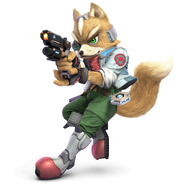

Fox
Win Conditions
- Keeping a % lead or a stock lead forces him to approach. Most approaches are snuffed out by Up-B.
Fox can grab as a mix-up though but not dangerous.
- Successful edgeguards/ledge trapping rack up a ton of damage or just kill him.
- Stay out of up air range. One of his most dangerous combos is up air strings.
- Play near ledge so his combos become much more limited and so you can retreat to the ledge.
- Keep your disadvantage in check. Fox will abuse any mistakes and will kill you or do a ton of
damage. (Careful with airdodges and mashing)
Focus
- Nair patterns and what he does afterwards. Super safe and leads into multiple combos. UpB helps a
ton but a well-timed nair is safer and can lead to jab. Can bait out upB and punish with up air.
- Escape options in disadvantage for myself. Don't air dodge or dair except maybe as a mix-up. Going
to the ledges is safer unless ledge trapping is on point or landing and shielding.
- Shielding habits. Grabs at low percents get him to kill percent. He has access to Up smash OoS so be
wary. Nair too.
- Keep fox in disadvantage. Neutral is rough if you have to approach.
Neutral
- You want to get him to jump into your shield. UpB covers most options and he can't get a good punish
on a shield unless he up airs you when you UpB.
- Shielding is one of the safer options in neutral. He can go for grabs but you can spot dodge to
punish though it can be baited out. If in doubt just stay in shield unless it runs low.
- Delay attack after up B because of f2 air dodge.
- Don't mash to keep him out his frame data is really good and he can punish just about anything.
- Try to corner him and keep him at ledge to limit his options and combos.
Disadvantage
Ledge
- Careful of fsmash. Active and can catch jump, getup, and roll. Can hit ledge too with weak spot.
Lots of lag though.
- Run up dsmash is somewhat good but nair can deal with it. Just be careful of baits.
- Only nair if he throws out a laggy move at ledge. He’s too fast to catch off guard.
- Careful about regrabs since his down smash can kill.
- Hanging at ledge is pretty good vs Fox since he doesn't have many options to deal with it. (If you
have a lead. )
Juggling
- Use dair carefully. Fox can easily punish it. You can use it when he whiffs an up air or you can
straight up challenge it but it has to be spaced right.
- Try to go for the ledge he doesn’t have many things to deal with ledgegrabs.
- Avoid air dodging most of the time. If you have to try to drift to the ledge to avoid fox vortex or
air dodge offstage if close enough.
Advantage
Ledge
- Chef is really good and can combo into ftilt or a smash attack.
- Down smash 2frames fox pretty easily.
- Dair if you can time it right the spike kills extremely early.
- Dash attack is also super good at 2framing.
Offstage
- Fox can recover super high. Hard to contest except with up b or up airs. Take his jump with up air
or nair and keep pressuring him.
- Firefox has a lot of startup. Just go for back air if he's force to use it.
- If you can't get offstage fast enough go for dash attack 2frames or ftilt/dsmash to catch side b or
even up b.
Juggling
- You can do some pretty good damage with nair and up air. Try to opt for nair more as its easier to
land.
- Fox has bad airspeed so you can force him to airdodge pretty easily.
- Frame 2 air dodge makes combos harder and he can land and uptilt or another fast option so be aware
of that.
Misc.
- Playing at ledge is very good but you give up stage control for it but also limit fox's options.
Stages
Battlefield
- Neutral stage overall both characters get a lot from it.
Final Destination
Town and City
Smashville
- Decent stage, try to keep stage control under the platform as much as possible.
Pokemon Stadium 2
- Neutral stage though you're susceptible to getting platform camped.
Yoshi's Story
- More advantages for game and watch though you die extremely early to upair but his disadvantage is
awful on this stage. Easy 2frames and early kills.
Lylat
- Always ban. Fox probably won't go here but it’s a risky stage for both characters. Better to avoid
it.
Kalos
- Always ban. Lives way longer but he has more raw kill power so it benefits fox more. Very easy to
get juggled and he has more recovery options.